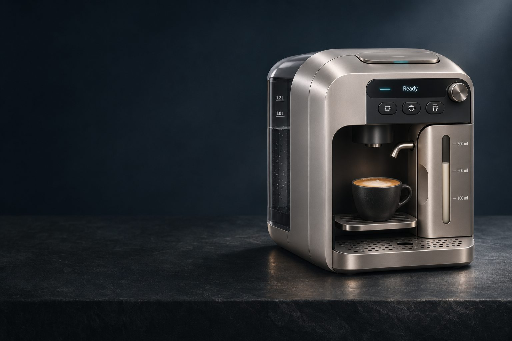
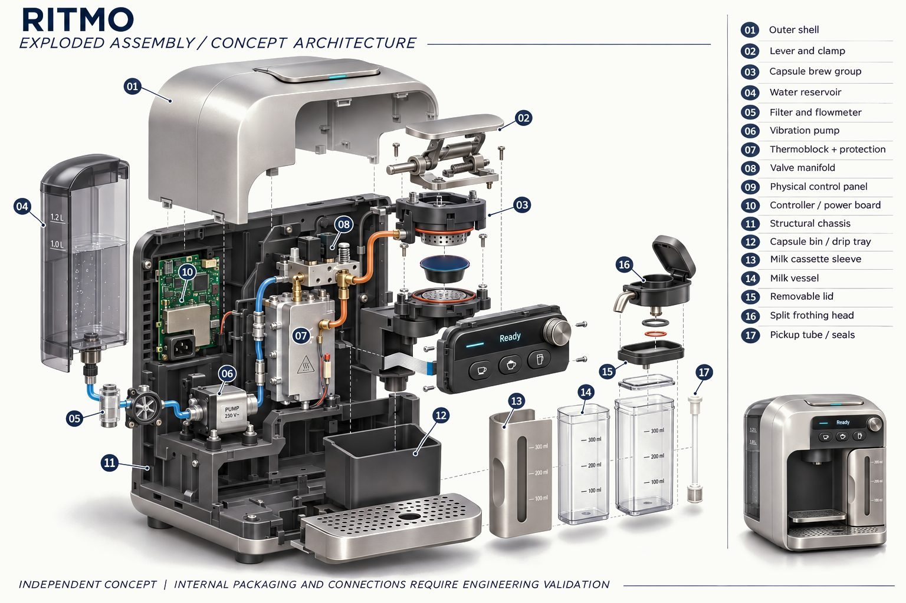

THE SITUATION TODAY
The milk isn’t hot enough.
The frother needs washing.
Then comes the descaling: what to do, how long it takes, whether it worked. Your coffee break becomes another thing to manage.
FOR THE MOMENT BETWEEN EVERYTHING
Your milk coffee, properly hot in one touch. Descaling that runs at a time you choose. Less warm-up waiting between calls.
That’s the future we’re designing with Ritmo.
This sounds familiar
Concept visual · A home coffee concept, shaped around your day.
IT’S NEVER JUST THE COFFEE
The little things add up. Especially when the only moment you have to yourself turns into something else to sort out.
THE SITUATION TODAY
Then comes the descaling: what to do, how long it takes, whether it worked. Your coffee break becomes another thing to manage.
WHAT WE’RE DESIGNING
One-touch hot milk coffee, without a separate frother. Care at a time you choose, with a clear result. Ready mode during your chosen work hours, to reduce warm-up waiting.
HOW IT COULD FEEL
A warm cup you enjoy. Care you’ve planned around your day. A proper pause before the next call.
CARE YOU CAN UNDERSTAND
The idea starts with milk parts you can reach and a care routine you can follow. Prepare the descaler, choose a time, and know whether the cycle is complete or needs attention. Required washing remains part of the routine.
Get the descaler ready, with steps you can follow on the machine.
The cycle runs when it suits your day, not in the middle of your break.
Completed, or a clear next step if something needs attention.

A BETTER BREAK STARTS WITH A REAL NEED
If you’re tired of working around your coffee machine,
help us decide whether Ritmo should become real.
Next, leave your email to hear if Ritmo moves toward launch.
Independent student concept: a launch is not guaranteed.